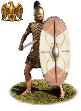
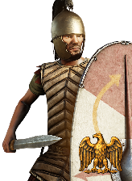
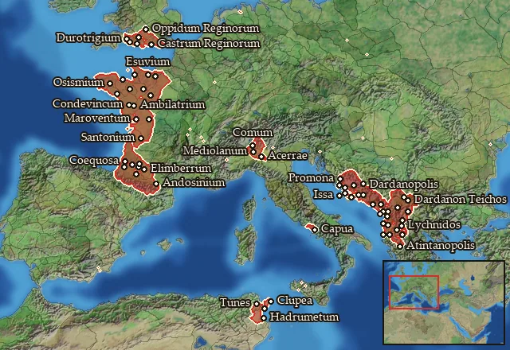

Legio VII Paterna Macedonica 1st Cohort


Class: heavy · Category: infantry · Men per unit: 60
Reforms: Unlocked by Named Legions are now available
Description
Macedonica with two C:s!
Stats
| Rank in roster | ||
|---|---|---|
| Men per unit | 60 | █████████· 87% |
| Attack | 14 | ███████··· 67% |
| Charge bonus | 14 | █████····· 51% |
| Defence | 39 | ███████··· 70% |
| · armour | 12 | ███████··· 70% |
| · defence skill | 21 | █████····· 54% |
| · shield | 6 | █████████· 89% |
| Morale | 14 | ████████·· 79% |
| Discipline | Normal | |
| Training | Highly trained | |
| Recruitment cost | 2,630 dn | ███████··· 74% |
| Upkeep per turn | 960 dn | █████████· 86% |
| Turns to recruit | 3 |
Weapons
| Primary | Secondary | Primary | Secondary | Primary | Secondary | Primary | Secondary | ||||
|---|---|---|---|---|---|---|---|---|---|---|---|
| Attack | 14 | 13 | Type | thrown · blade | melee · blade | Projectile | pilum_early | — | Ammunition | 2 | — |
| Charge bonus | 14 | 14 | Damage | piercing | piercing | Range | 40 | — | Properties | Armour-piercing (counts only half the target's armour) · used just before charging into combat | — |
Defence
| Primary | Secondary | Primary | Secondary | Primary | Secondary | Primary | Secondary | ||||
|---|---|---|---|---|---|---|---|---|---|---|---|
| Total | 39 | — | Armour | 12 | — | Defence skill | 21 | — | Shield | 6 | — |
Condition and terrain
| Hit points | 1 | Ground: scrub / sand / forest / snow | 0 / -1 / 0 / -1 | Charge distance | 30 | Formations | Square · Testudo |
Technical stats
| Time between blows (primary / secondary) | 2.5 s / 2.5 s | Collision mass per man (1.0 is normal) | 1.28 | Spacing between men: close / loose | 1 × 1.2 m / 2 × 2.4 m | Default ranks | 5 |
| Extra fatigue in hot climates | 3 |
In battle: Can sap · A command unit
Who can recruit it
No faction has this on its core roster: it can be raised only in the provinces below.
A further 4 factions can raise it in the provinces below.
Exactly what a settlement must have, route by route (2)
| Building | Also requires | Building | Also requires | ||||
|---|---|---|---|---|---|---|---|
| Direct Rule | Tier 3 Military Industrial Complex · Tier 2 Colony · Legio vii paterna macedonica early · Named Legions are now available | Homeland | Tier 2 Military Industrial Complex · Legio vii paterna macedonica early · Named Legions are now available |
Areas of recruitment

Legio vii paterna macedonica early: 65 provinces
Adrumet · Ambilatria-Andecavia · Anagnutia · Anatolike Dardania · Andosinia-Aerenosia · Ardiaia · Aspis · Atintania · Auscia-Gatia · Axios · Basilike Dassaretia · Bigerrionia-Bargusia · Boreia Labeataia · Campania · Cenomania-Eburovicia · Cocosatia-Vocatia · Coriosolitia · Daorsia · Dardania · Dassaretia · Delmatia · Diablintia · Ditionia · Durotrigia · Durotrigia Centralis · Durotrigia Occidentalis · Durotrigia Orientalis · Elusatia · Epetia-Salonitis · Epidamnia · Esuvia · Galabria · Gylakeia · Illyria · Insubria · Insubria Meridionalis · Issa · Kaouia · Labeataia · Lexovia · Liburnonesoi · Mania · Melaina Korkyra · Namnetia · Narensia · Olkinia · Orestike Dassaretia · Orobia · Osismia · Parthinia · Penestia · Pictonia · Qart-Khadasht Zaxyir · Redonia · Reginia · Reginia Septentrionalis · Santonia · Sotiatia · Tarbellia-Ptiania · Tarusatia-Sibusatia · Taulantia · Tragouria · Tunesia · Venellia · Venetia-Aremorica